Caratteristica: La classica bibita gassata, rinfrescante e croccante, che non passa mai di moda. Il perfetto
equilibrio tra dolcezza e bollicine.
3€/330ml
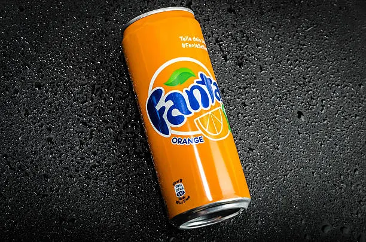
Fanta
Tipo: Bibita gassata
ABV: 0%
Caratteristica: Una bibita fruttata e rinfrescante con un sapore di arancia brillante. Piena di frizzantezza
e bollicine, perfetta per una dolce rinfrescata.
3€/330ml
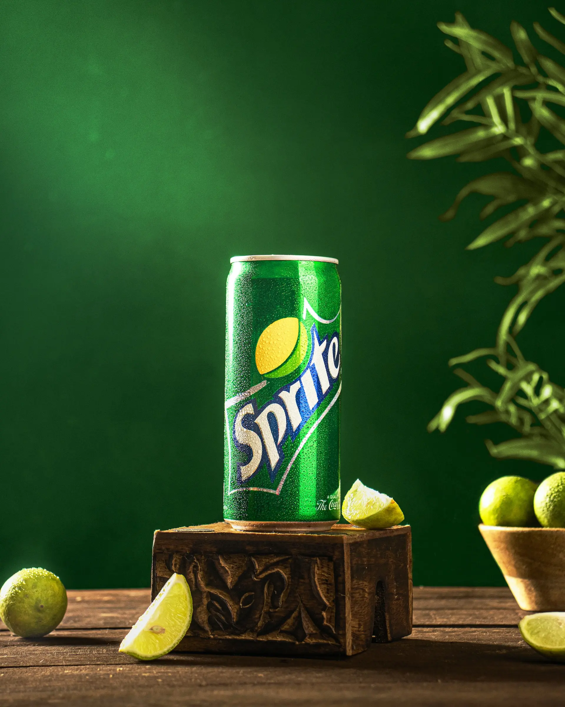
Sprite
Tipo: Bibita gassata
ABV: 0%
Caratteristica: Una bibita gassata al limone e lime, croccante e rinfrescante, dal sapore pulito e
rinfrescante. Ideale per placare la sete con un'esplosione di agrumi.
3€/330ml
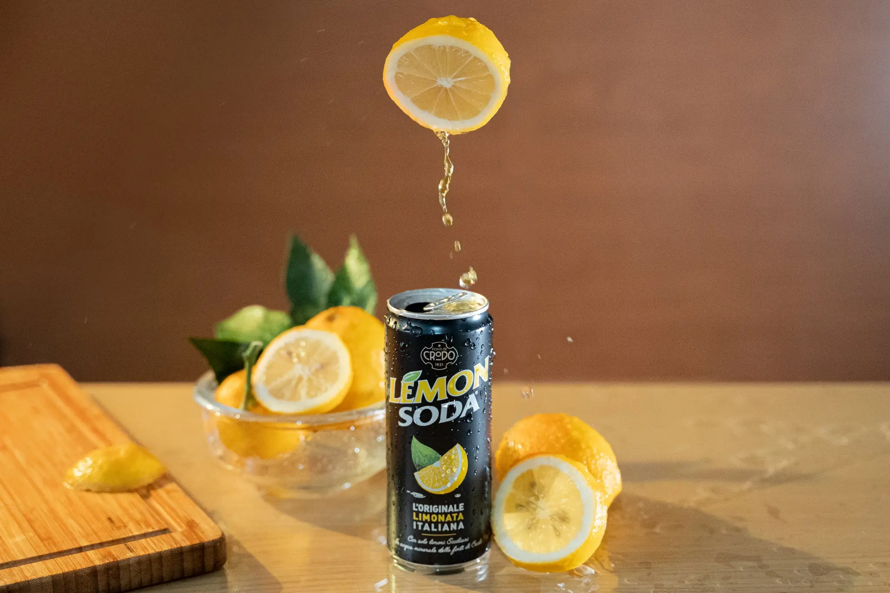
Lemon Soda
Tipo: Bibita gassata
ABV: 0%
Caratteristica: Una bibita al limone dal gusto aspro e rinfrescante, con un forte sapore agrumato. Perfetta
per una rinfrescata croccante e fresca nelle giornate calde.
3€/330ml
Estathé Pesca
Tipo: Tè freddo
ABV: 0%
Caratteristica: Il classico tè freddo alla pesca italiano — dolce, morbido e rinfrescante. Perfettamente
equilibrato e amato da tutte le generazioni.
3€/330ml
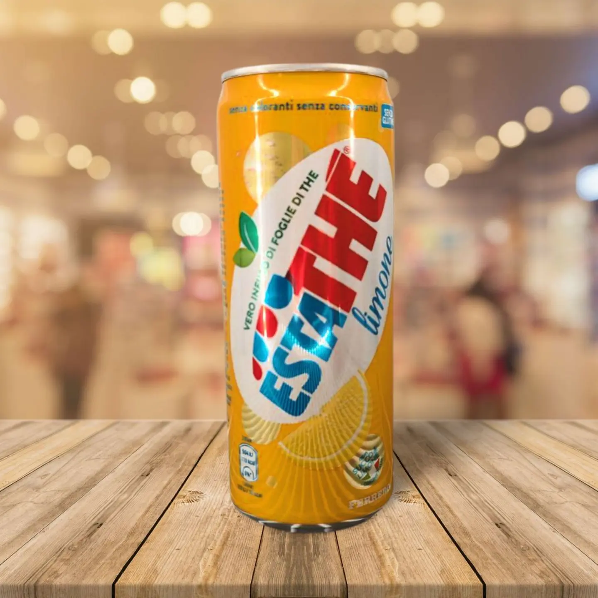
Estathé Limone
Tipo: Tè freddo
ABV: 0%
Caratteristica: Tè freddo al limone rinfrescante con un gusto agrumato. Leggero, dolce e perfetto per
rinfrescarsi in qualsiasi momento.
3€/330ml
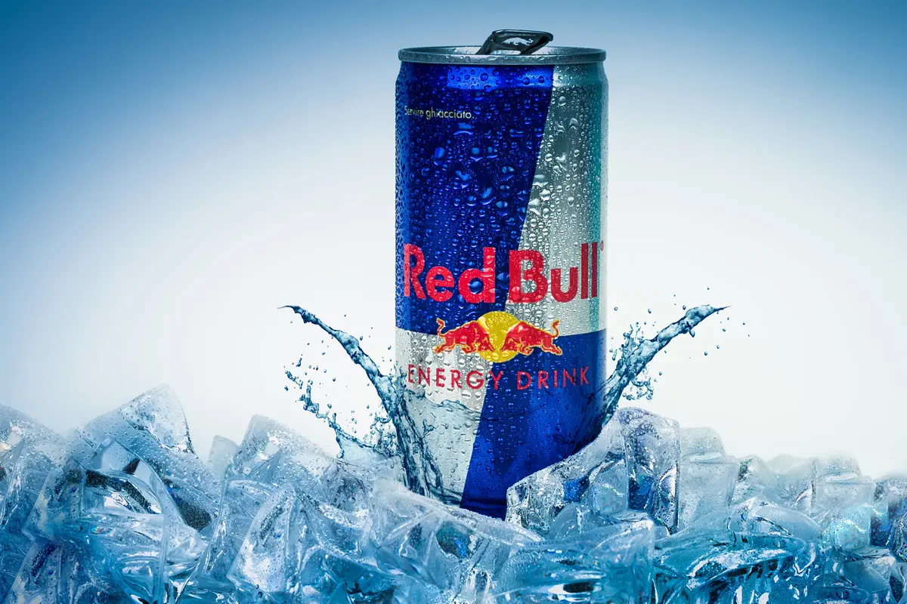
Red Bull
Tipo: Bevanda energetica
ABV: 0%
Caratteristica: Una bevanda energetica dolce e gassata con caffeina e taurina. Progettata per aumentare la
concentrazione e l'energia — Red Bull ti dà le ali!
4€/250ml
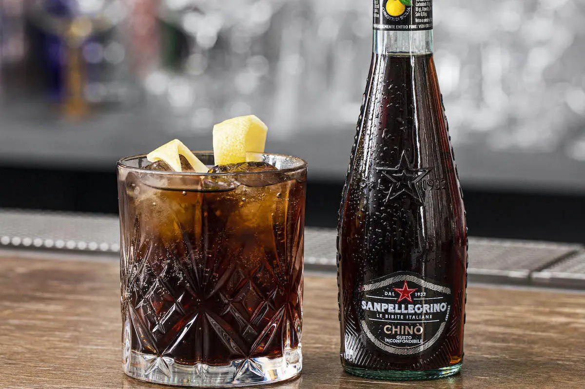
Sanpellegrino Chinotto
Tipo: Bibita gassata
ABV: 0%
Caratteristica: Una bibita italiana dal gusto deciso e agrodolce, a base di agrumi chinotto. Ricca di sapore
con note erbacee — un assaggio di tradizione.
4€/200ml
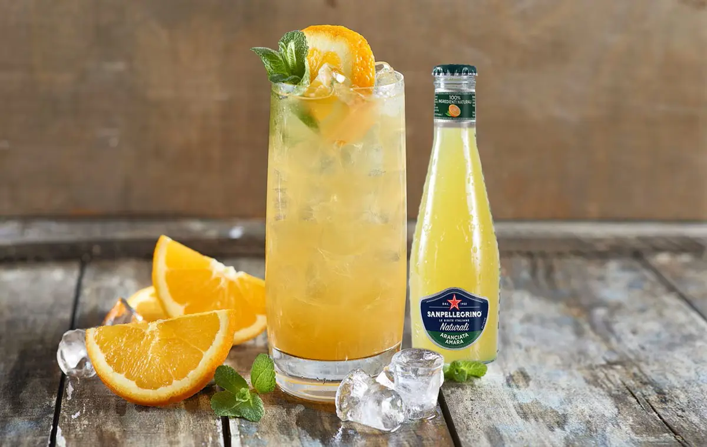
Sanpellegrino Aranciata Amara
Tipo: Bibita gassata
ABV: 0%
Caratteristica: Una sofisticata bibita all'arancia amara con note agrumate profonde e una piacevole
sfumatura amarognola. Classica
e rinfrescante — in stile italiano.
4€/200ml
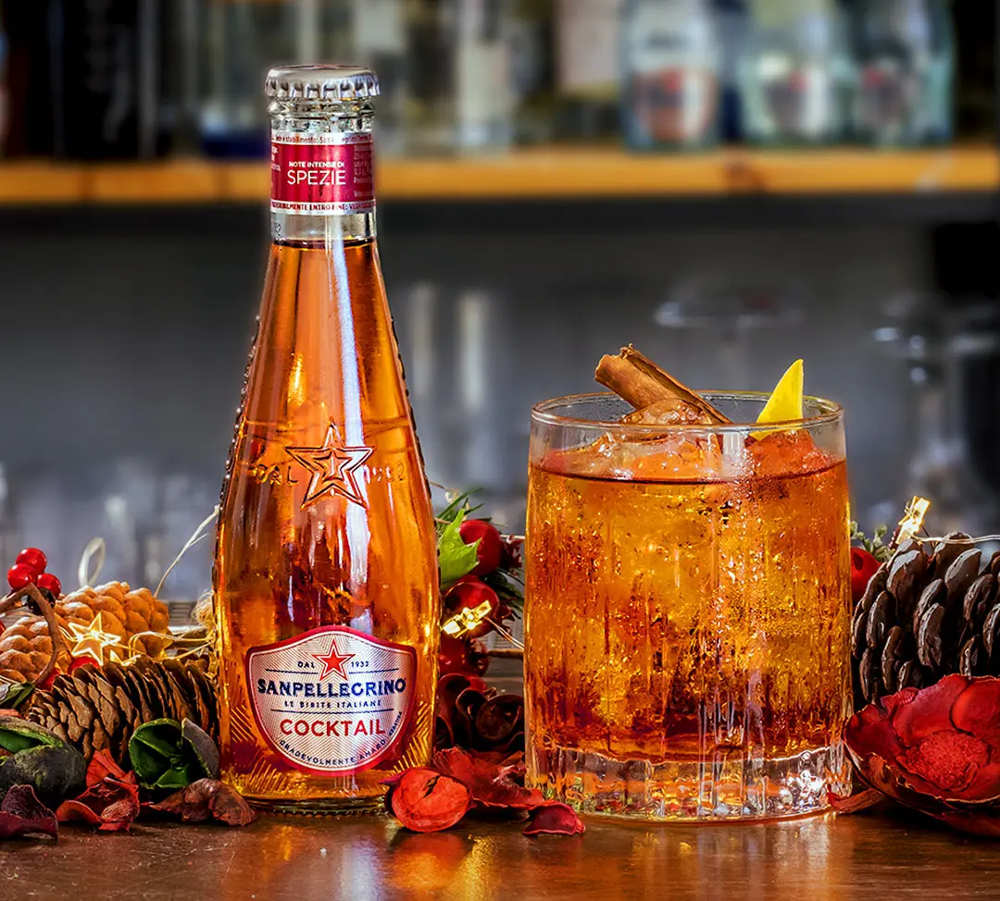
Sanpellegrino Cocktail
Tipo: Bibita gassata
ABV: 0%
Caratteristica: Una bevanda frizzante di colore rosso rubino con una miscela unica di agrumi e note erbacee.
Vibes classiche
da aperitivo italiano — senza alcol!
4€/200ml
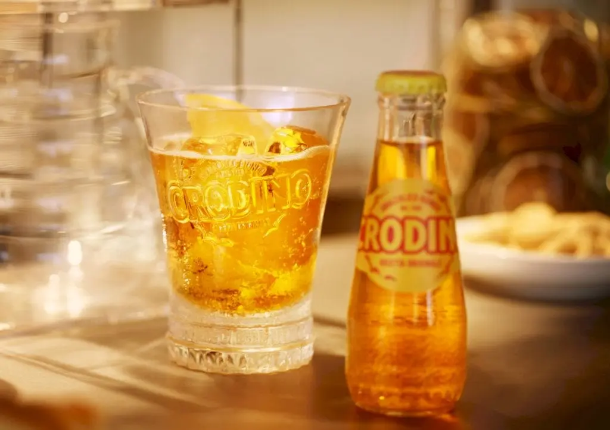
Crodino
Tipo: Bibita gassata
ABV: 0%
Caratteristica: Un sofisticato aperitivo italiano analcolico. Amaro, erbaceo e rinfrescante, Crodino offre
un'alternativa
unica ai tradizionali aperitivi.
4€/150ml
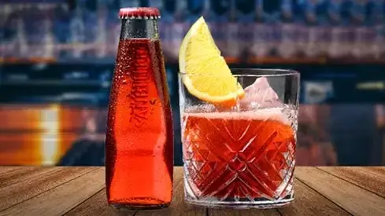
Sanbitter
Tipo: Bibita gassata
ABV: 0%
Caratteristica: Un aperitivo italiano analcolico rinfrescante con un gusto deciso e amaro. Un'alternativa
perfetta
ai tradizionali bitter, ideale per chi cerca un sapore unico senza alcol.
4€/150ml
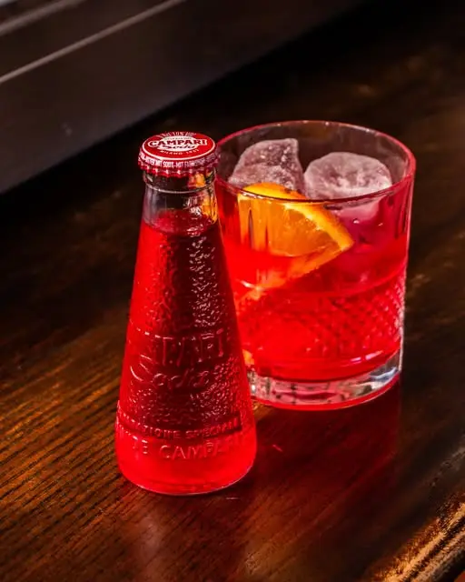
Campari Soda
Tipo: Aperitivo
ABV: 10%
Caratteristica: Un aperitivo italiano deciso e amaro. Con le note distintive di erbe e agrumi di Campari, è
una
soda rinfrescante e complessa — perfetta per un drink prima della cena.
4€/200ml
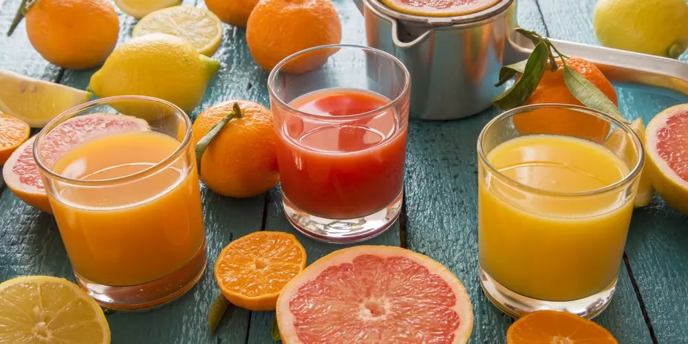
Succo Fresco
Tipo: Succo Fresco
Sapore: Arancia / Pompelmo
Caratteristica: Succo puro e vibrante, spremuto fresco al momento. Naturalmente dolce o leggermente aspro —
solo
frutta, nient'altro.
Caratteristica: Un'ampia selezione di succhi lisci e rinfrescanti fatti con frutta e verdura mature. Dolci,
aspri o salati —
c'è qualcosa per ogni gusto.